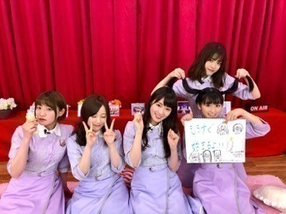

2018/0531Thu髪のボリュームも気になるっ(o・・o)
松村沙友理ですっ 
雨が多くなってきましたねっ
梅雨入りした 地域もあるみたいで
季節の移り変わりを感じております(*´◒`*)
面白いですよね。この前まで
凄く寒くて 雪も降っていたのに。
体調は大丈夫ですか？
季節の変わり目だからか
周りでも 咳をしてる人が多くて
心配になります。
私は身体は元気ですが
雨の日は まつげの上がりが悪くて
ちょっと落ち込んじゃいます(>_<)
女の子なら 分かってくれるはず(>_<)！
最近 つば九郎さんとお会いできまして
めっちゃ可愛くて紳士的で素敵な方でした(*´◒`*)
頬っぺたが 赤ちゃんみたいで
可愛過ぎました(>_<)！
会った日に たまたま琴子ちゃんと会ったのですが
つば九郎さんと会えたことを凄く羨ましいと
言っていて めっちゃ可愛かった(*´-`)
フリップ芸見たかったらしい(*´-`)
琴子ちゃんも 会いたかったみたいです(*´-`)
ドアラさんも 好きだと言っていました(*´-`)♡
ドアラさんにも 会えるといいね(*´-`)♡
CanCam.jpや
CanCamのTwitter、 Instagramにて
#今日のコーデ 更新されてますっ！
たくさん いるので
是非見てください～
可愛いお洋服いっぱいきたよ～
メンバーと 久しぶりに会うと
人見知りでちゃうの 直したい。
ほんとは めっちゃ話したいのに
ばいちゃ
2018/0529Tueたくさん見て欲しいものがありますっ(o・・o)
松村沙友理です！ 

本日
18時45～18時55分
NHK Eテレ「少年アシベGO!GO!ゴマちゃん」
23時15分～24時15分
テレビ朝日系「ソノサキ～知りたい見たいを大追跡!」
26時05分～26時35分
テレビ東京系「吉本坂46が売れるまでの全記録」
出演します～
それぞれ いろんな私がいるので
ぜひチェックしてくださいっ♡
先日 初めて江ノ島に行きました★
お魚さん沢山見て癒された～
この写真は ウツボさんメインのお気に入りの写真ですっ
わあああああ
2018/0523Wed雨の日も 私は前を向くっ(o・・o)
松村沙友理です！ 

このあと
21:00～
テレビ東京系
家、ついて行ってイイですか？出演しますっ！
まいちゅんと一緒だよ★
大好きな番組で毎週観てるので
嬉しかったです♡
矢作さんも さゆりんごのこと
覚えててくれていましたっ♡
ぜひ、ご覧ください～
CanCam７月号
表紙は TWICEさん♡
↑同じ顔してる。笑
中ページに 私もいますよ～♡
お腹すいた～
今日は 何食べようかな～
白米かな～？
あ、みなさま 白米様聴いてくれてますか～？
一日一白米様ですよ～＼(^o^)／
2018/0521Mon想いはブタの中にっ(o・・o)
松村沙友理です。 


Girls Award2018 SPRING/SUMMERに
モデルとアーティストとして出演しました！
来てくださった皆さんありがとうございました！
私は
「R4G」さんのステージを
歩かせていただきました！
ボードやタオルありがとうございました☆
沢山みえて嬉しかった～♡
前回は コードギアスの世界でしたが
今回は STEINS；GATEの世界観でした☆
頭には
牧瀬 紅莉栖ちゃんの
ガールズアワード特別映像があったりして
裏で わああああ(//∇//)ってなっていました！
今回も緊張しちゃいましたが
R4Gの良さ 伝えられたでしょうか？
R4Gステージには
坂道グループから
私、松村沙友理と
衛藤美彩ちゃん
欅坂46の土生瑞穂ちゃん
けやき坂46の加藤史帆ちゃんの
四人が出演しました♡
みんなめっちゃ似合ってて 素敵だった～(；ω；)♡
みんないて めっちゃ心強かった～(；ω；)♡
ちなみに私の着用したアイテムは
メンズも 着れるアイテムですよ～
SHEL'TTER WEB STORE（https://www.ec-store.net）をチェックしてみてくださいね～☆
そのあとの ライブもとっても楽しかったです！
シンクロニシティの 真っ白な衣装で
踊るのも
久しぶりにやる夏曲たちも
すごく楽しかったです♡
まいちゃんに「写真撮ろ～♡」って言ったら
このポーズ、、、。
可愛いすぎやろ！！！
ちっちゃい子みたいな ポーズ！！！！
可愛いすぎやろ！！！
可愛すぎて
「そのポーズなに？」って言ったら
両手つけてくれました！！！
やったーーー！！！！！！
さゆりんご幸せー！！！！！
っていう一日でした(^-^)v
ずっと 仲良くしてほしいな(^ ^)
2018/0510Thuりんごもももも似たような感じっ(o・・o)
松村沙友理です 
前回もビジュアルモデルをやらせて頂きました
ブランド「R4G」の第2弾は
『シュタインズ・ゲート ゼロ』です！
こちらのアイテムは発売中の
SHEL'TTER ＃46で予約できます！
ここから
ちゃんとした説明です↓
松村沙友理がビジュアルモデルを務めるファッションブランド「R4G」。
先日発表された「R4G×コードギアス反逆のルルーシュ」に続く第2弾として、4月から放送されているアニメ『シュタインズ・ゲート ゼロ』のアイテムが2018年5月7日発売の雑誌「SHEL'TTER ＃46」で予約を開始いたします。
です！
です！！
アイテムとしては
Tシャツやアロハシャツなど
カジュアルストリートなアイテムが中心になっていますが
男女問わず めっちゃ使えるアイテムです！
わたしも 撮影のときに
メンズのものを着用したりしました！！
これとか
今回もめっちゃお洒落です！！
凄いです。R4G
ちなみにですね、
販売のスケジュールとしては
一般予約が5月10日から
発売開始は
5月25日となっております！
予約・販売共にSHEL'TTER WEB STORE（https://www.ec-store.net）をみてくださいね～♡
R4Gの公式サイトや
SNSもよろしくお願いします！
撮影のオフショットや
アイテムの紹介がたくさんあります～☆
面白いです～☆
公式Webサイト：https://r4g.jp/
Twitter：@official_r4g
Instagram：official_r4g
明日はMステ～

ツインテールを表してるの、、、カナ？
またね～